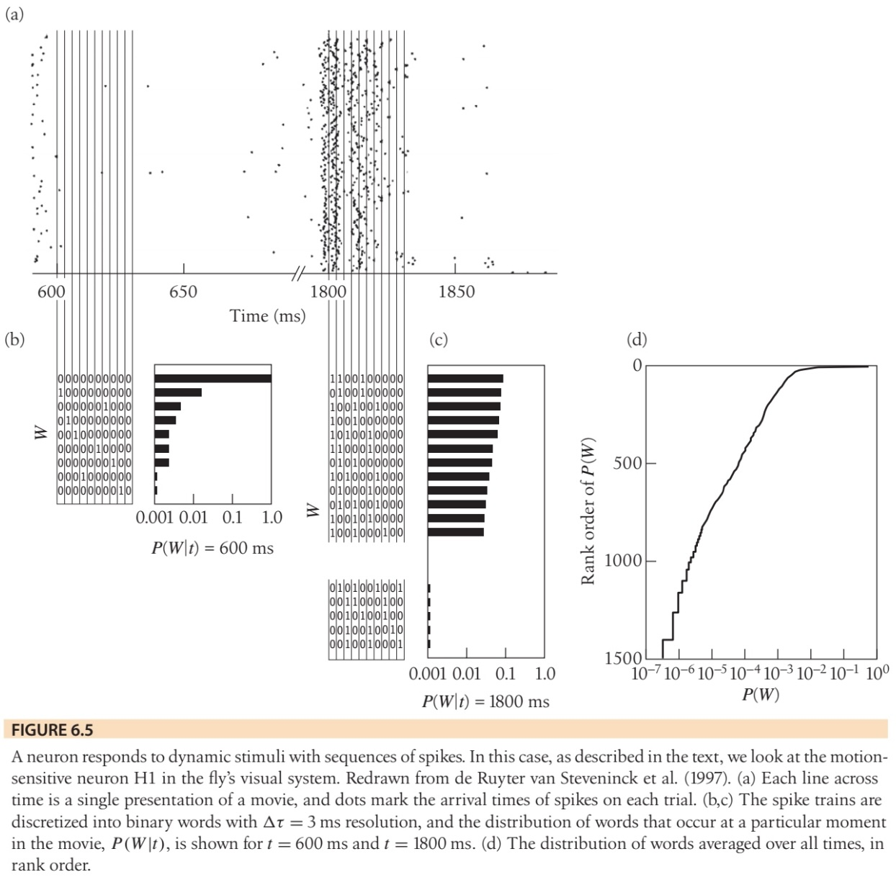
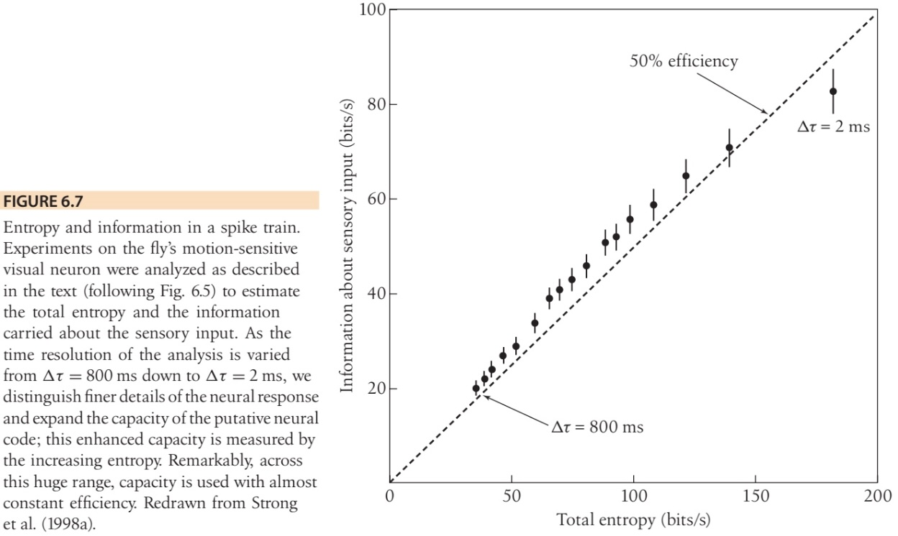

Entropy and information#
Kardar 2.7
Previously, we defined \(S \equiv \ln [\underbrace{\# \text { of configurations }}_{\Omega}](*)\). This definition is appropriate if all configurations are equally likely.
Example: Coin flipping - given \(N_{+}, \Omega\left(N_{+}\right)=\left(\begin{array}{c}N \\ N_{+}\end{array}\right)=\frac{N !}{N_{+} N_{-}}\). Thus, \( \text { or } S\left(N_{+}\right)=N_{+} \ln N_{+} / N+N_{-} \ln N_{-} / N \)
In general \(N_+\) is not fixed but itself a random variable \(\rightarrow P_{S}(S) d S=P\left(N_{+}\right) d N_{+} \).
But in the thermodynamic limit, we know
\(\Rightarrow\) In the thermodynamic limit \((N \rightarrow \infty)\), we can only observe “typical” configurations \(\left(N_{+}=p N ; N_{-}=q N\right)\); there are \(e^{S}\) of them and all of them are equally likely \(P({\sigma_i})=p^{N} \cdot q^{N}\) )
These observations are easily generalized to a dice with M faces. If rolling the dice results in face \(i\) with probability \(p_{i}\), we expect face \(i\) to show up exactly \(N p_i\) times in the thermodynamic limit, \(N \rightarrow \infty\). The number of typical configurations is therefore
In physics, \((*)\) arises as the entropy change when \(M\) components are mixed together. It is therefore called “entropy of mixing” (also closely related to Gibbs entropy).
Interpretation as lack of knowledge#
Shannon realized that the number of possible configurations consistent with our macroscopic constraints can be viewed as a lack of knowledge about the current microstate.
Examples:
Suppose we flip coin \(N\) times and we know \(N_+\). Then, the actual microstate is one of \(e^{S\left(N_{+}\right)}\) micro-states.
If we don’t know \(N_+\), respectively \(N_+\) is not fixed? \(\Rightarrow e^{S}\) typical microstates, \(S=-N \sum_{i} p_{i} \log p_{i}\). For a coin: \(S=-N (p \log p +q \log q)\).
Consequences:#
Coding#
Suppose we end up measuring the micro-state, how many bits do we need to store this information?
For \(N \rightarrow \infty\), simply enumerate only the \(e^{S}\) typical microstates, all having came probabilities. This needs \(\log _{2}\left(e^{s}\right)=S \cdot \log _{2}(e)\) bits. (of course, this is not a proof, but it works because of CLT induced measure concentration.)
Shannon thus gave an operational meaning to \(S\) in terms of “information” and the resources required to communicate an ensemble of messages, in which symbol \(i\) is drawn from \(p_i\). To simplify notation Shannon introduced the information entropy, which for any probability distribution \(p_{i}\), is defined as
Note
Suppose, we would like to communicate a long stream of independent and identically-distributed random variables (i.i.d.), each drawn from the distribution \(p_i\). Our discussion above suggests that it is impossible to compress such data such that the code rate (average number of bits per symbol) is less than the Entropy of the source distribution, without it being virtually certain that information will be lost. (Shannon Source Coding Theorem)
Note:
\(S=\log (M)\) if \(p_{i}=\) const. \(=\frac{1}{M} \quad\) “naive encoding”
But \(s<\log (M)\) for any non-uniform probability distribution.
data compression practically implemented by using shorter codes for symbols that occur more frequently and longer codes for symbols that are less common.
For example, in the English language, letters like ‘e’, ‘t’, ‘a’, and ‘o’ are used much more frequently than letters like ‘z’, ‘q’, ‘x’, ‘j’. So, in a text compression scheme, it makes sense to use fewer bits to represent ‘e’ or ‘t’ than ‘z’ or ‘q’. This results in a smaller overall file size compared to using the same number of bits for every character.
\(I\left[\left\{p_{i}\right\}\right]=\log_{2} (M)-S\) measures information content of the pdf.
Concrete data compression example:
Suppose \(K=4\), \(\vec p=(\frac 12, \frac 14, \frac 18, \frac 18)^T\)
We could use a binary representation \(\rightarrow\) need 2 bits for 4 possibilities
Better is the code
\(1 \rightarrow 0\)
\(2 \rightarrow 10\)
\(3 \rightarrow 110\)
\(4 \rightarrow 111\)
note that the code word length \(\ell_i\) for symbol \(i\) is just \(\ell_i=\log_2 p_i\)
The average code word length per symbol is therefore \(\langle L\rangle/N=-\sum p_i\log_2p_i=S(X)=\frac 74<2\)
In fact, the above code can be generalized to obtain an optimal code for any source distribution, provided the messages are long enough and consist of uncorrelated symbols.
Estimation:#
Suppose we want to estimate a distribution of \(X\), about which we have some partial information, e.g. we know the value of \(\langle X\rangle=\sum_{i} p_{i} X_{i}\) or \(\operatorname{var}(X)\), but not \(\left\{p_{i}\right\}\).
According to Shannon’s interpretation of entropy, the least biased probability distribution is the one that maximises \(s\) given the constraints. This distribution is called the Maximum Entropy distribution. Any other distribution would pretend to have more information than is actually available (in form of the constraints).
Example:
Find the MaxEnt distribution under the constraint of a given fixed calue \(\phi\) of \(\langle F(x)\rangle=\sum_{i} p_{i} F\left(x_{i}\right)\). It goes without saying that we also have to enforce the probability distribution summing up to one, \(\langle 1\rangle=\sum_{i} p_{i}=1\).
To maximize the entropy \(s=-\sum_{i} p_{i} \log p_{i}\) subject to both constraint, we use two Lagrange multipliers \(\alpha, \beta\) and maximize
Notes:
This does not mean \(p\) is \(p^{*}\). Multiple \(\{p_i\}\) may give the same \(\langle F(x)\rangle\)
the above maps on the Boltzmann distribution if we identify \(\beta\equiv (k_{B} T)^{-1}\) and \(F=\text { Energy }\). The Boltzmann distribution can, therefore, be viewed as the Maximum Entropy distribution subject to the constraint of a given mean energy \(\langle H\rangle=U\) (also called internal energy).
One can add further constaints and update in light of extra knouledge.
How does this compare to the Bayesian updating rules?
Relative entropy#
Suppose the symbols \(X\) of a message are drawn from the distribution \(\operatorname{Pr}\left[X=x_{i}\right]=p_{i}\). But we think they are drawn from \(\{q_{i}\}\) instead, use correspondingly sized code words and, hence, do not optimally compress the message. Instead there will be discrepancy between the length \(L(N)\) of the number of bits we use, \(L(N)=-N \sum_{i} p_{i} \log q_{i} \) and the minimal number of bits, \(L_min(N)=-N \sum_{i} p_{i} \log p_{i}\), which is given by the entropy. The relative difference,
is called Kullback-Leipler (KL) divergence or relative entropxy.
Suppose we obtain samples \(\left\{X_{i}\right\}\) and want to decide whether they are drawn from \(\vec{p}\) or \(\vec{q}\). To this end, we compare the log-likelihoods for drawing the samples from either distribution,
Thus, we need \(\gtrsim D_{K L}^{-1}(\vec{p} \| \vec{q})\) samples to reliably tell that the samples are drawn from \(\vec{p}\) instead of \(\vec{q}\).
Note
When our calculations involve probability distributions of more than one random variable, as in the next section, it is sometimes challenging to keep the different conditional / joint / marginal distributions apart. Then, it is useful to use the following detailed notation
Note that conditional and joint probability are connected via
which implies Bayes theorem
Mutual information#
Recall that we can interpret \(S(X) \cong\) as lack of knowledge about \(X\). Measurements can reduce our lack of knowledge, but often we cannot measure a particular quantity \(X\) directly but only a qunatity \(Y\) that is correlated with \(X\). For example, we may be interested in knowing the particular microstate of a 1d spin chain, but we can only measure the magnetization of the spin chain - the difference between up- and down-spins.
¿By how much does our lack of knowledge about \(X\) decrease when we measure \(Y\)?
To address this question, let’s first assume we measure a particular value \(Y=y\). The fact that we now know the value of \(Y\) changes the entropy of \(X\) from the initial entropy \(S(X)\) of the \(X\) distribution,
to the entropy \(S(X|y)\) of the conditional probability distribution \(P(x|y)\) of \(x\) given \(y\),
Note that we do not necessarily have \(S(X|y)<S(X)\), for example if the particular measurement \(Y=y\) indicates that there is a lot of noise in \(X\).
However, if we average the negative entropy change over all possible \(y\)’s drawn from \(P_Y\) we obtain a non-negative quantity
which is called mutual information \(I(X;Y)\) between \(X\) and \(Y\). \(I(X;Y)\) measures how many bits of information we can learn on average about \(X\) when we measure \(Y\).
The notation “\(X;Y\)” makes it clear that the expression is symmetric (evident from the last line of the last formula): on average, measuring \(Y\) tells as much about \(X\) as measuring \(X\) tells us about \(Y\).
Recalling our discussion of Kullback-Leibler divergence, we see that the mutual information is a positive quantity unless \(X\) and \(Y\) are uncorrelated, \(P_{(X,Y)}=P_{X}\otimes P_Y\).
Interestingly, if we consider only discrete sets of possibilities, then entropies are positive (or zero), so that these equations imply the bounds \(I (X; Y) \leq S(X)\) and \(I (X; Y) \leq S(Y)\).
The mutual information appears is a central quantity in information theory and appears in basic models of information flow:

\(I(X;Y)\) quantifies how efficiently \(Y\) encodes \(X\).
The maximal rate of information transmission through the channel is given by the channel capacity
Example:
To see how the ideas of entropy reduction and information work in a real example, let’s consider the response of a neuron to sensory inputs (for more, see Bialek’s book, Ch. 6.2 [Bia12] and the original paper published in PRL[SKVSB98]).
Figure 6.5 shows the results of experiments on the motion-sensitive neuron H1 in the fly visual system. In these experiments, a fly sees a randomly moving pattern, and H1 responds with a stream of spikes. If we fix \(\Delta \tau = 3\)ms nd look at \(T = 30\) ms segments of the spike train, there are \(2T /\Delta \tau \sim 10^3\) possible words, but the distribution is biased, and the entropy is only \(S(T, \Delta \tau)\sim\) 5 bits\( <\log_2(10^3)\sim 10\) bits. This relatively low entropy means that we can still sample the distributions of words even out to \(T \sim 50−60\) ms, which is interesting, because the fly can actually generate a flight correction in response to visual motion inputs within \(\sim 30\) ms.

The figure below plots
vs \(S(\text{Words})\) as a measure for how much information per second the spike trains encode about the the time stamp in the movie. The idea is that this gives an estimate of the information encoded about the entire sensory input (for which the time stamp is just a proxy).
As the time resolution \(\Delta \tau\) is varied from 800 ms down to 2 ms, the information rate follows the entropy rate \(S(\text{Words})\), with a nearly constant 50% efficiency. This result was influential because it suggests that neurons are making use of a significant fraction of their capacity in actually encoding sensory signals. Also, this is true even at millisecond time resolution. The idea that the entropy of the spike train sets a limit to neural information transmission emerged almost immediately after Shannon’s work, but it was never clear whether these limits could be approached by real systems.
